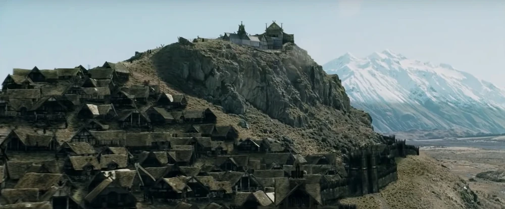

Edoras was built on a hill in a valley of the White Mountains by Rohan's second King, Brego son of Eorl the Young. Before this, Rohan's capital was at Aldburg in the Folde. In Edoras' center was the Golden Hall of Meduseld, where the ruler sat.
In TA 2758, Edoras was overtaken by Dunlendings led by Wulf, who ruled the city until the following year, when he was slain and the Dunlendings driven out by Fréaláf Hildeson.
It was at Edoras that Aragorn, Gimli, Legolas, and Gandalf met with King Théoden in the year TA 3019, after the breaking of the Fellowship of the Ring.[2] Whilst the Battle of the Hornburg was being fought, a mustering of Rohan began at Edoras, before it was moved to Dunharrow after Gandalf spotted one of the Nazgûl flying near the settlement.
Several months later, Elrond and Arwen parted for the first time at Edoras, after a great feast in memory of Théoden.
Edoras was built at the end of the valley of Harrowdale, which lay under the great mountain Starkhorn. The River Snowbourn flowed past Edoras on its way west towards the Entwash and was joined by a small stream with its source near the top of the hill. As Rohan consisted of mostly small villages and farmsteads, Edoras was the largest settlement and held the Golden Hall of Meduseld, the seat and residence of Rohan's kings. The Barrowfield, where Rohan's kings were entombed, lay outside the main gate.